Inhalt Index DeskTop Bronstein

 Unendliche Reihen Funktionenreihen Asymptotische Potenzreihen
Unendliche Reihen Funktionenreihen Asymptotische Potenzreihen


für jedes 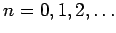 gilt. Dabei wird in 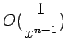 das LANDAU-Symbol ,,groß O`` verwendet. Für (7.92) schreibt man auch 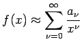.
| Beispiel A |
|
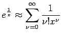 ist eine asymptotische Reihe, die für alle x mit 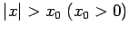 konvergiert. |
| Beispiel B |
|
Wiederholte partielle Integration ergibt für das Parameterintegral 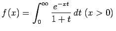, das für x > 0 konvergiert, die Darstellung 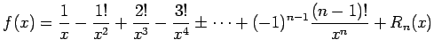 mit 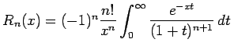. Wegen 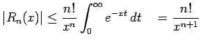 gilt 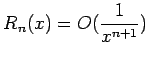 und damit |
Die asymptotische Potenzreihe (7.93) ist divergent für alle  , da der Betrag des Quotienten aus dem (n+1)-ten und dem n-ten Glied den Wert 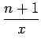 hat. Trotzdem ist diese divergente Reihe zur Funktionswertberechnung von f(x) gut geeignet. So erhält man z.B. für x=10 mit Hilfe der Partialsummen S4(10) und S5(10) die Abschätzung 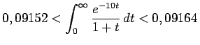.
, da der Betrag des Quotienten aus dem (n+1)-ten und dem n-ten Glied den Wert 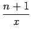 hat. Trotzdem ist diese divergente Reihe zur Funktionswertberechnung von f(x) gut geeignet. So erhält man z.B. für x=10 mit Hilfe der Partialsummen S4(10) und S5(10) die Abschätzung 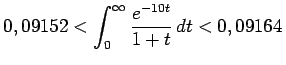.